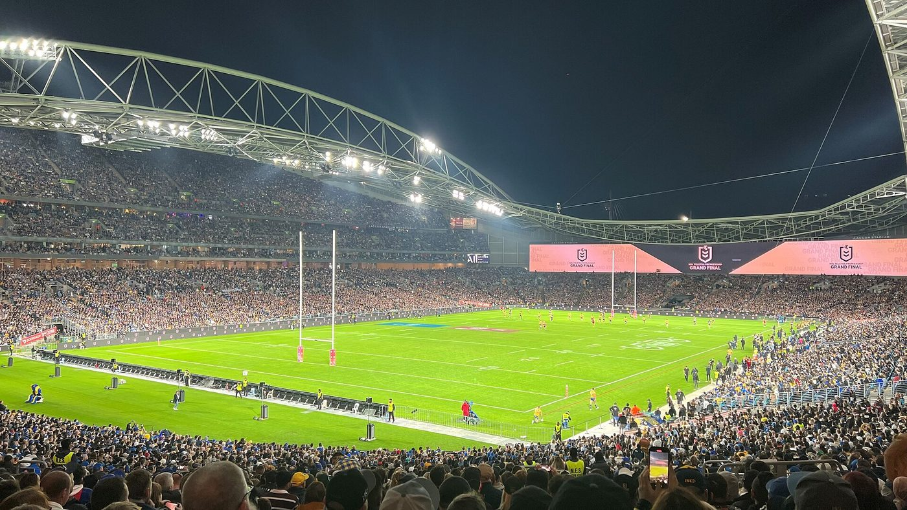
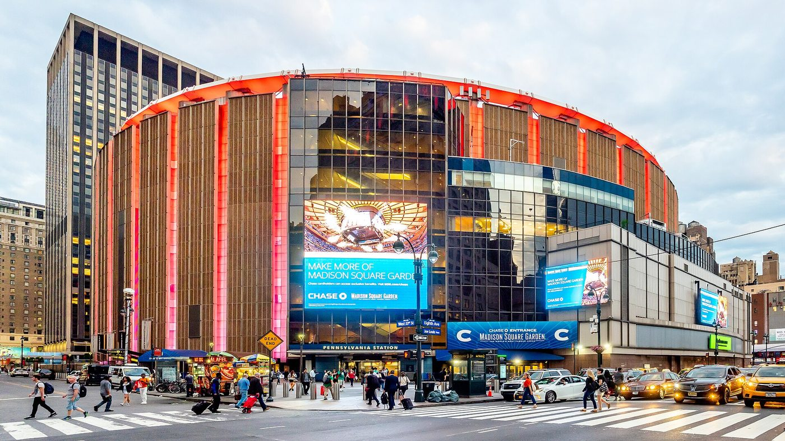

Elsewhere
A World Cup starts on our doorstep, the Wallabies get another crack at the All Blacks, tennis crowns a new number one and the NBA is almost back.
Rugby league · World CupThe world comes to Moore Park


Tonight, a World Cup kicks off just down the road. The 2026 Rugby League World Cup starts with the biggest rivalry in the sport, Australia against New Zealand, at Allianz Stadium, the same ground where Sydney FC play the Wanderers tomorrow. Moore Park is having quite a week.
The Kangaroos are the favourites, as they usually are. Australia have won their last 18 World Cup matches, and they haven't lost one since the 2008 final, which, as it happens, was against New Zealand. Coach Kevin Walters made one surprising choice: Reece Walsh starts at fullback ahead of James Tedesco, even though Tedesco was the best player on the pitch in the NRL Grand Final. Mitchell Moses and Cameron Munster are the halves, and Isaah Yeo is captain. "The players who aren't involved in game one will get their opportunity during the tournament," Walters said, "and I know they'll be ready for it."
This tournament is really three World Cups in one: men's, women's and wheelchair. Games will be played all over Australia, in Port Moresby in Papua New Guinea and in Christchurch, New Zealand. The semi-finals are double-headers in Newcastle (Saturday 7 November) and at Allianz Stadium (Sunday 8 November), and both finals are at Suncorp Stadium in Brisbane on Sunday 15 November. Tickets for the final start from $39 for adults. Australia's pool also includes Fiji and the Cook Islands, so there are plenty of chances to see the Kangaroos before the knockout games.
Rugby union · Bledisloe CupSecond chance in Sydney


After last week's 50–19 thrashing at Eden Park, the Wallabies get another go at the All Blacks on Saturday at Accor Stadium (kick-off 3.45pm, after the Wallaroos play Scotland earlier in the afternoon). New Zealand have already kept the Bledisloe Cup, but for Australia this is about pride, and about showing they're heading the right way with a home World Cup a year away.
Both coaches have made changes. For Australia, Aidan Ross replaces Angus Bell in the front row and Josh Nasser takes over at hooker, while lock Lukhan Salakaia-Loto will play his 50th Test, a fine accolade. All Blacks coach Dave Rennie has made eight changes to his matchday 23, with George Bower and Fabian Holland starting in the forwards and Josh Moorby on the wing for the injured Leroy Carter.
Did you know?
The Bledisloe Cup is named after Lord Bledisloe, who was Governor-General of New Zealand when he gave the trophy in 1931. Australia last won it in 2002, before many of today's Wallabies were born. Saturday won't change that this year, but an upset win would be a brilliant start.
Tennis · Shanghai MastersA new number one, and a shock
Alexander Zverev of Germany will finish 2026 as the world's number one player for the first time in his career. It has been his year: in the summer he won the French Open and the US Open, his first Grand Slam titles after years of near misses. "Knowing that I will finish the year on top of the rankings is just a dream come true," he said. With Jannik Sinner out injured since Wimbledon, the race came down to Zverev and Carlos Alcaraz.
And then Alcaraz lost. The second seed was beaten 7–5, 7–6 in the third round by Belgium's Zizou Bergs, ranked 39th in the world, the biggest win of Bergs's career. "I feel like now I really can win against these guys," Bergs said. "Not just I can play against them, but I can win against them." Novak Djokovic is out too, beaten in the second round.
Go, Demon!
Australia's Alex de Minaur is flying in Shanghai. He beat Karen Khachanov 6–3, 6–4 to reach the quarter-finals without losing a set, and his reward is a match against the new world number one, Zverev. The final is on Sunday 18 October. De Minaur has climbed to seventh in the race for the season-ending ATP Finals in Turin.
Basketball · NBAThe Aussie connection

_-_Full_(48124330357).jpg){kind=link}
The NBA season tips off on Tuesday 20 October in America, which is Wednesday 21 October in Australia. As we said last issue, the Knicks are the champions. This time, let's look at the Australians to follow.
Josh Giddey
The playmaking guard is on a four-year contract worth US$100 million, making him Australia's joint highest-paid NBA player.
Dyson Daniels
One of the league's best defenders, on exactly the same deal as Giddey. The two Boomers teammates face each other four times this season.
Jock Landale
The big man has signed a new one-year deal with Atlanta, so he and Daniels are teammates.
Josh Green
Traded to Minnesota in the off-season. A new team and a fresh start.
Johnny Furphy
Still recovering from a serious knee injury (a torn ACL). One to look out for when he's back.
Ask a grown-up to check the NBA app for game times in Sydney. Most games are played on Australian mornings, so they're perfect for breakfast viewing on weekends.